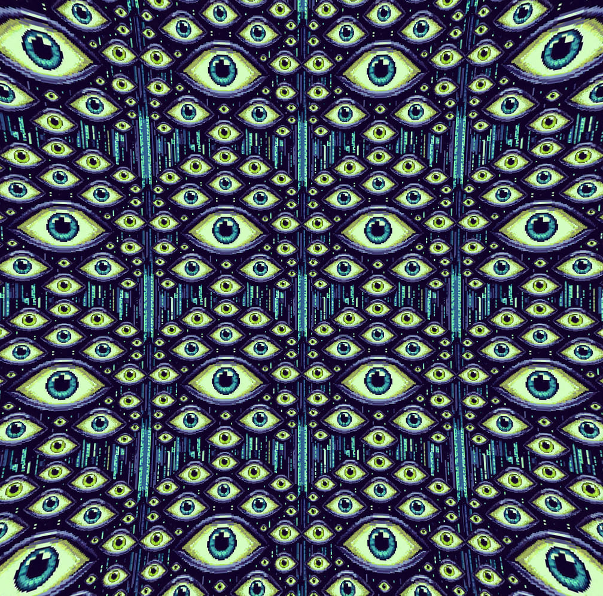

A Matrix
O que é a Matrix?
Na minha opinião, o filme The Matrix provê a melhor metáfora que nossa sociedade tem para entendermos o porque do mal organizado e opressão serem possíveis de existirem, então eu usarei este meio para esse propósito. Enquanto que minha interpretação não seja a única possível, Eu acredito que ela seja válida, compreensiva e mais importante, ilustrativa da mensagem que estou tentando transmitir.
Começaremos então discutindo o que não é a Matrix. A Matrix não é o mundo físico, até onde sei, o mundo físico é realmente real e de fato é sempre governado pelas leis da física, além disso, a Matrix também não é a Internet, embora muitos acreditam que seja, a Matrix abrange e transcende ambos esses mundos, existe desde a aurora da civilização e irá continuar existindo até o seu colapso.
Então, o que seria a Matrix? É complicado, assim como no filme, é praticamente impossível sequer medir o tamanho e o escopo da Matrix para aqueles que ainda não viram a Matrix pelo o que ela é, entretanto, diferente do filme, Eu acredito que seja uma ética imperativa tentar convê-la em um senso literal, até mesmo para aqueles que são tão dependentes da Matrix que lutarão de todas as formas para protegê-la.
O pior, eles não irão entender ou acreditar e continuarão com seus negócios. De certa forma, eu acredito que Cypher estava certo em reenviar Morpheus pelo que ele fez, porque Morpheus é a estrutura social que mantém a humanidade subornidada a sua própria vontade. É o maquinário da sociedade que existe somente para se auto-perpetuar, sua influência, e seu poder, independente de qualquer necessidade humana. Cria separações entre nós através de ilusões e essencialmente nos transforma em motores serviçais de poderes políticos e econômicos. As máquinas que se alimentam desse poder são instituições: grandes corporações, governos, escolas, instituições religiosas e até mesmo organizações sem fins lucrativos.
Toda instituição chegará em um ponto em sua existência onde sua primária função se torna auto-preservação e perpetuação, ao invés de servir a necessidade básica humana. Nesse ponto a instituição se torna uma máquina da Matrix, por exemplo, quando elas se tornam máquinas, governos deixam de servir o povo e ao invés disso obstinam-se em extender seu poder sob ele; corporações priorizam aumentar valor de acionismo em vez de produtos de qualidade ou de alguma forma servir bem o público; escolas vêem os estudantes como meios e não como um fim; organizações religiosas equiparam associação com salvação (e ativamente opõe outros ensinamentos e até mesmo práticas independentes); e organizações sem fins lucrativos e de caridade gastam mais recursos e tempo em atividades para gerar mais fundos do que focar em sua atividade original, eventualmente toda instituição grande se torna uma máquina, ela fica grande demais para a humanidade.
Em adição às máquinas de auto-perpetuação independentes que normalmente são as que pagam nosso salário, a Matrix tem diversas grandes cooperativas e grupos sinistros ativos de máquinas subsistindo do seu poder e diretamente contribuindo para a própria estrutura da Matrix. Esses grupos são o Complexo Industrial Militar, Complexo Industrial Policial, Complexo Industrial Prisional, Complexo Industrial de Vigilância, Complexo Industrial de Mídia, Complexo Industrial Acadêmico, Complexo Industrial de Agricultura, Complexo Industrial de Medicina e a maioria das organizações religiosas, uma vez que a maioria delas abandonou os princípios que elas dizem defender. Todas as máquinas nesses grupos ou oprimem a humanidade ativamente ou permitem que a opressão persista. É através de todo esse esforço combinado que a Matrix toma formas terríveis e malignas.
Você já parou para pensar se Aristóteles e Platão dedicariam suas vidas a algo que eles realmente não acreditavam ou testaram? Eles tinham uma escola, uma escola filosófica, 2300 anos atrás e até hoje temos que aprender isso na Universidade. Mas, por que? Se as coisas que eles falaram tempos atrás forem apenas formas de pensamentos sem uma verdade profunda, por que temos que ir tanto tempo atrás?
Quantas opiniões existem por aí? Por que a opinião deles é tão importante? Esse é meu questionamento.
Se você pegar Karl Marx e seu livro 'Das Kapital' você vê que sua visão completamente confronta as visões da filosofia antiga, não apenas diferenças em opiniões, mas na maneira de pensar, eu chamo isso de uma forma de desumanização, tudo no nome do capital, sem pudor.
Eu imagino como isso pode ser, porque a verdade pode ser encontrada na filosofia antiga, eu acredito nas leis sobre propriedade e riqueza que Aristóteles apontou muito rigorosamente em seus trabalhos. Por que? Pois as pessoas que trabalharam com ele estavam dedicadas a algo. Você não faz tudo que eles fizeram sem que haja algum sentido. Com a invenção do dinheiro possibilitou que se alterasse essas leis porque a economia é desde então não uma troca de bens, mas sim uma economia baseada em dinheiro. Karl Marx foi o front-man de uma mudança, dinheiro para a era digital, sendo assim talvez nós devíamos pegar Marx e adicionar TI (Tecnologia da Informação) com sua teoria para torná-la atualizada, Marx-TI ou Matrix.
Ele surge com a ideia que um trabalhador deve ganhar somente o suficiente para se manter com saúde, de forma com que ele produza todo dia o mesmo, em outras palavras, a única razão que nós leva a te dar dinheiro é para você continuar trabalhando pra gente, produzindo. Você não pode ganhar muito dinheiro, porque você se tornaria preguiçoso, somente o suficiente para você aparecer todo dia, com a quantidade necessária de sono que você precisa para seu nível de energia produzir o máximo possível.
Filosofia interessante, não? Cheia de ética e valores humanos.
Bentham com sua filosofia conhecida como Utilitarianismo surge nesse jogo, talvez nós possamos fazer outros pequeno jogo porque essa é a marca comercial de certas organizações, charadas e coisas escondidas em plano visível. Utilitarianismo = Iluminatianismo, ou como você nomearia uma filosofia baseada nos Illuminatis? Certo, isso é tudo especulação, mas olhe para a morte de Aristóteles e combine ela com a data de morte de Bentham, o inventor do Utilitarianismo, então nós temos 322 e 1832.
O corpo de Bentham foi preservado, sua cabeça foi mumificada, porém seu corpo deve existir de ossos, então sem mumificação. Quando você estuda filosofia, seu livro começa com 322 e termina com 1832 ou vice-versa.
Quando você coloca esses dois filósofos juntos, eles não significam muito um para o outro, porém, quando você olha mais a fundo, você vê que o Utilitarianismo combinado com Aristóteles e Marx e mais o dinheiro na forma de uma corrente digital, surge a perfeita fusão para o respeito das leis naturais da Filosofia Antiga dando ao dinheiro o poder de transferir energia.
Dinheiro você pode entregar como um empréstimo, você pode investí-lo, fazendo isso você não tem um grande capital ou qualquer uma das coisas que os Filósofos Antigos protestaram a respeito das leis naturais.
Eu não sei se ter muitas riquezas e capital tem um impacto negativo na vida, mas Aristóteles estava convencido, a questão então é... Será que Marx sabia que ele podia ultrapassar os Filósofos Antigos com o que ele estava escrevendo? Algo estranho a apontar é que a fórmula que Marx usou no seu livro MCM e CMC, algumas pessoas dizem que intencionalmente essa fórmula aponta a outra coisa. Pessoalmente eu penso em física, novamente, algo escondido em plano visível em uma forma de zombaria para os iniciados. Essa foi uma dica que uma pessoa me deu... E de fato, esse é o humor de pessoas que sabem de coisas que não sabemos. Eles amam isso, quando você vê isso na sua frente, porém não tem sequer ideia.
Utilitarianismo defende uma sociedade com a maior quantidade possível de alegria. Sendo assim o objetivo é a máxima quantidade de alegria para você basear suas decisões e dizer se determinada decisão é ética ou moralmente correta. Então, quando o máximo possível de quantidade de alegria é atingido, então ética e moral estão sendo respeitados, não importa quantas pessoas estão envolvidas e como a alegria está dividida entre elas, parece maravilhoso, não?
Mas se 20 pessoas estão apenas "Ok" e 1 pessoa está super feliz, e essa pessoa está tão feliz que a soma total de felicidade é maior quando todos os 20 estão apenas "Ok", então isso seria correto e moralmente aceito. É sobre SACRIFÍCIO, é aceitável que algumas pessoas tenham que se sacrificar enquanto a quantidade total de alegria é maior. Então, quem seriam essas pessoas que precisam se sacrificar e de quantas pessoas estamos falando a respeito? Será que eles sabem sobre isso?
Você já percebeu que pessoas viciadas em status, propriedade e extravagância... As pessoas que tem o sentimento que são melhores que todo o resto, que eles são donos do mundo, que essas pessoas atingem uma maior quantidade de estado de alegria comparados com as pessoas que não se preocupam realmente a respeito de propriedade, dinheiro e se preocupem com outras pessoas ao invés do seu próprio interesse? Interesse próprio, por sinal, é a mão invisível de Adam Smith.
Mas o que Aristóteles diz a respeito de tudo isso? Nenhum homem pode ter mais do que uma certa quantidade de propriedades, posses e riquezas. Ele é muito rigoroso e claro sobre essas regras em seus trabalhos. Então, temos um problema? Se a economia era baseada na troca de bens, então há realmente um problema, porém Karl Marx e o sistema bancário trazem uma solução. Você pega seu dinheiro e toma-o como um empréstimo, de forma que você não tenha uma grande quantia de capital, porém, cada mês você ganha uma quantia que cobre suas Grandes Despezas Luxuosas.
A maneira que você escapa dos conselhos de Aristóteles e Platão em como a vida funciona e as Leis da natureza, da divisão de propriedade pela quantidade de pessoas na terra, dessa maneira você foge das forças negativas quando tem muito, e você usa Marx e sua teoria de como explorar por completo seus trabalhadores para sua própria vantagem, enquanto isso você dá a esses trabalhadores empréstimos de forma que você não quebre as Leis naturais que os Antigos Filósofos falavam. E acima de tudo, esses empréstimos até te dão mais dinheiro, por causa dos juros. Como se a exploração do trabalhador de Marx não bastasse, eles também precisam pagar juros nos empréstimos, mas não se preocupe, o modo de vida Utilitariano resolve o problema, é tudo sobre aspectos moralmente e eticamente toleráveis e aceitos. (322-1832. Aristóteles + Bentham).
E tudo isso é possível por causa de contratos, sem acordos legais isso não existiria. Sem empréstimos, sem investimentos e sem contratos de trabalhos. A regra da Lei e Ordem é de fato muito IMPORTANTE.
Se dinheiro controla trabalhadores e dinheiro controla a energia dos trabalhadores, então dinheiro controla energia. Se o mercado de ações é baseado em dinheiro e o dinheiro controla os trabalhadores, então quem é a mercadoria? Um bonito nome, não? Engraçado. Além disso a mão invisível tem um papel muito mais importante para jogar do que o geralmente aceitável, porém eles não nos dão toda a informação.
Esse texto todo parece uma zombaria, porque ele é uma zombaria. Por que? Por causa da maneira com que eles falam conosco, diversão por causa da nossa falta de conhecimento. A segunda razão é que a pessoa que retornou da caverna de Platão estava sendo zombada. Quando pessoas que sabem mais que você te zombam com charadas que você não entende, tenha certeza que eles pensem que você é realmente um idiota, a charada se tornará muito mais fácil porque eles pensarão que você é um estúpido. Mantenha o sinal sob as coisas, conecte os pontos e veja onde as flechas apontam. Lendo livros aleatórios de boa fé não fará que saibamos a verdade, mas sim só especular. Existem pessoas que sabem. Quando houver pessoas que te tratam dessa maneira, você pode se tornar louco ou jogar o jogo deles. Pessoas inteligentes são zombadas com charadas mais complexas. Então seja um homem inteligente, faça-se de um boneco estúpido para com os mestres, engane-os, manipule-os, estude psicologia, colete informação. Utilize a informação e faça deles os fantoches enquanto eles pensam que ainda são os mestres, porque é isso que eles estão e vem fazendo conosco.
E por favor, não cavalgue em um bode, pegue o ônibus.
Resistindo a Matrix
Resistência é um estado mental. A Matrix faz com que seja fácil de aceitar o que ela te diz e faz com que seja difícil de filtrar a Verdade das mentiras. Resistir a Matrix requer o entendimento de seus princípios de operação e suas suposições, rejeite-as e ajude outros a fazerem o mesmo.
A Matrix é fascista, a Matrix é mentirosa e a Matrix é burocrática. A Matrix é essencialmente o domínio da instituição sob o indivíduo, e nisso, os direitos do indivíduo são subordinados aos direitos da instituição. Indivíduos tem que acreditar (ou pelo menos, não oporem ativamente a ideia) que grandes corporações tem o direito de proteger seus lucros acima de qualquer coisa, e sendo assim, ditam políticas e leis. Eles precisam acreditar que essa lei é justa, moral e aparentemente baseada em razão. Ou, eles devem se sentir não afetados pela lei em um nível individual. Eles precisam aceitar o programa e ficarem satisfeitos com as recompensas dadas pela aceitação. Eles precisam fazer seus trabalhos, pagar impostos e estar contente com seus salários (pelo menos no ponto em que seus salários e a estabilidade que ele provê são atraentes o suficiente para deter o risco de saída da Matrix). Rejeitar essas crenças são os primeiros passos para Resistir a Matrix.
Além de tudo, pessoas devem ser afastadas do processo criativo. Eles precisam esquecer que podem produzir trabalhos manuais, artesanatos como indivíduos, independente de grandes corporações. E eles devem se sentir completamente dependentes para que a Matrix possa prover o que eles precisam para sobreviver. É através dessa violação que grande parte das pessoas que trabalham com computador conseguem se libertar, ou pelo menos ver a Matrix pela o que ela é. Apesar de serem produtos da Matrix (na maioria dos casos), computadores e a Internet tornaram possível que humanos criassem trabalhos individuais em uma escala global: Mídia independente, auto-publicações, software de código-aberto, música de computadores, arte de computadores, gráficos e por aí vai. Computadores possibilitam pessoas independentes a se comunicarem e construirem estruturas sociais de serviços humanos fora da Matrix.
Entretanto, perceba que computadores não são a única maneira de conquistar isso, e esse período temporal não foi o primeiro Êxodo. Nos anos 60, por exemplo, pessoas abandonaram a Matrix em massa e independentemente criaram arte, cultura e música, catalizados principalmente pelas drogas psicodélicas. Infelizmente, muito dessa estrutura colapsou por causa de diversas razões, a principal sendo o acelerado, imprudente e insustentável maneira de sua construção e a subsequente repercurssão legal e institucional. Milagrosamente, porém, muitas ideias centrais persistiram e sua proliferação é a principal razão pelo qual estou Ciente e capaz de escrever esse documento hoje. Parece que o catalisador hoje é uma combinação da Internet e novamente as drogas psicodélicas, ambos esses fenômenos possibilitam uma maneira de nos desconectarmos da realidade programada e suposições da Matrix e capturar suas percepções em suas próprias mãos. Todavia, sua "percepção" é nada mais que o seu sonho individual que você criou através da sua jornada pela vida. Existe o sonho da sociedade que vem passando de geração para geração e instigado em sua mente pelo seus familiares, amigos, escolas e instituições e existe o seu sonho individual. Cada passo do caminho que você viveu subjetivamente em sua vida e dependendo onde você cresceu, companhias que caminharam com você, e os hábitos que você formou, você criou o seu pequeno sonho. Sua "teoria" na vida, enquanto você estava completamente inconsciente disso. Tudo que você é "você", "Eu", "mim", e tudo que você acredita e se identifica simplesmente não é você. Não é a Verdade, é parte de uma teia gigante de sonhos individuais que todos no planeta estão aprisionados. Essa é uma das principais razões pelo qual o mundo está da maneira que está, porque é tão caótico. Você vai menosprezar todos que não sonham o mesmo que você, e outros farão o mesmo com você. É impossível para nós viver o mesmo sonho individual porque nós não somos capazes de conhecer sobre cada um de nós em um nível profundo. É uma névoa constante que cresce grande e grande e mais densa a cada dia que passa. É o seu ego e o meu ego. O sonho não é real, se nós quisermos até mesmo tentar iniciar uma compreensão sobre o que significa existir como um ser humano nesse plante e evoluir, essa verdade deve ser aprendida e é apenas o começo. Em algum lugar pelo caminho, as entitades que estão apresentando o show perceberam como o ego funciona, e eles estão fazendo um trabalho excelente em nos manter distraídos na questão de buscarmos nosso caminho fora dos nossos sonhos e do sonho da sociedade. Psicodélicos são apenas uma simples ferramenta, porém uma de muitas a ser explorada e expandir sua consciência, porém seja substância psicodélicas, meditação, essas não são a última resposta, eles simplesmente nos mostram a porta, porém é sua escolha se você quer ou não entrar para o outro lado.
Para persistir, A Matrix requer controle, e em sociedades democráticas ela mantém esse controle através da filtração de visão de realidade das pessoas através da apropriação de mídias em massa e televisão por corporações. Em essência, a Matrix requer uma forma de controle de pensamento, mas não no sentido ficção científica, em vez disso, conquista uma maneira efetiva de controle mental através da manufatura de consentimento. A grande maioria do público tem que "comprar a ideia". Eles precisam acreditar que os jornais da mídia passam uma ideia verdadeira do mundo real, e em sua maioria, eles acreditam nisso. Tudo que o público em geral conhece sobre o mundo, eles conhecem através da Matrix. Os símbolos e imagens que a Matrix apresenta para eles se tornaram mais reais que a própria realidade, consequentemente a popularidade da ímpia abominação que é a Televisão.
Perceba também que enquanto alguns mecanismos de mídia promovem ativamente uma agenda política de dominação e controle, em um todo não é através de uma grande conspiração que esse processo (ou qualquer outro processo da Matrix) funciona. É simplesmente a forma com que a mídia em massa é organizada. Mídia em massa é uma maquinário que existe como uma entidade que visa maximizar lucro e as notícias mais lucrativas (e as mais baratas para produzir) são bytes sonoros reciclados e pré-empacotados de notícias impressas de corporações e governo. Além de tudo, com o interesse de preservar seu fluxo de receita, as mídias não podem deixar que o público tenha qualquer opinião que venha a ameaçar a autoridade e as políticas do governo ou o lucro de seus patrocinadores, que são também máquinas da Matrix e na maioria das vezes estão envolvidos diretamente em negócios de dominação e controle. Sendo assim, a mídia deve perpetuar o status quo, sem novidas são boas novidades, ou seja, repetir sempre a mesma coisa na mente do público.
Entender o viés da mídia é a chave para destruir o filtro que ela aplica. Considere quem são os marketeiros e patrocinadores. Esteja atento em notícias disfarçadas de investigações reportivas. Quando possível, confirme que o convencional, corporativo produz histórias com a cobertura de locais como IndyMedia, WikiNews, GNN, Politech, Free Speech TV, Democracy Now, Free Speech Radio News e FAIR. O tempo todo essas fontes também cobrem muitos itens de arregalar os olhos, que por muitas vezes não recebem nenhuma menção na mídia das corporações.
Finalmente, e seguramente não menos importante, a Matrix obstina-se em identificar e conhecer seus membros o tempo todo, em uma forma equivocada de manter o controle. Ela demanda que você entregue completamente sua privacidade para que possa funcionar em cima dela, é na quebra dessa última propriedade da Matrix que podemos nos liberar de verdade dela, criando economias, comunicação e cultura independente do seu controle.
É claro que a última forma de resistência é desconectar-se por completo de qualquer e toda dependência da aliança de governo e instituição. Para você se remover da estrutura de poder da Matrix e contribuir seus resultados econômicos com economias resistentes. É essa forma de resistência que cria uma oposição violenta vinda da Matrix, uma vez que prover esse poder econômico é a função primária da Humanidade, como ela vê isso.
Infelizmente para muitos essas forma de resistência é simplesmente inalcançável por conta de laços sociais e familiares, especialmente começando pela sua primeira realização do tamanho e escopo da Matrix. Entretanto, diferente do filme, é possível você se libertar gradualmente em vez de imediatamente, e em alguns casos isso pode se provar melhor do que fazer tudo de uma só vez, numa única tentativa. Começa-se por desconectar-se, cortar a Televisão da sua vida, especialmente os jornais da TV e os Reality Shows que ela transmite. Você é capaz de conseguir toda a informação e entretenimento através da Internet ou até mesmo da realidade real (ou ocasionais filmes). Evite grandes redes de loja quando possível, especialmente por comida, dê suporte a pequenas (especialmente sustentáveis) empresas que mantém o espírito de empreendedorismo independente vivo. Manter-se e estar sempre fora de dívidas (especialmente dívidas sem equidade, ou rapidamente depreciação de equidade, como empréstimos de carros) é crucial, já que a dívida é um dos primários mecanismos no qual a Matrix utiliza para perpetuar a nossa obediência. Outra questão, se você é um assalariado que trabalha 40 horas por semana pode ser um grande começo para você declarar sua liberdade da máquina e das corporações que te oprimem a ser um escravo assíduo. Também liberará uma grande quantidade de energia no qual depois pode estar disponível para resistência.
Daqui para frente, uma limitada forma de resistência onde você saí da Matrix por curtos períodos de tempo (longo o suficiente para conduzir compras, transações empresariais e comunicações com o submundo) é perfeitamente dentro do alcance dos indivíduos literados em computadores, e funcionando como um consumidor é suficiente suportivo para a Economia Anônima para que ela seja sustentável. Além disso, a probabilidade de descobrir essas pequenas atividades podem ser reduzidas o quanto você quiser, fazendo elas efetivamente é o experimento desse COMO-FAZER.
Ao progedir, você perceberá você desenvolvendo uma ou mais identidades separadas, ou pseudônimos, é o ideal que haja o máximo de separação entre esses pseudônimos possível. Eles não devem parecer conhecer um ao outro, não devem falar dos mesmos assuntos ou comprar as mesmas coisas e acima de tudo devem ser diligentemente separados da sua identidade física. Mantenha diferentes carteiras, bolsas, contas de usuário e se possível, computadores. De maneira simples, desenvolva um ou mais Tyler Durdens, exceto sem toda aquela insanidade, auto-destruição e comportamento sociopata, ou com isso, caso ajude-o.
Os adeptos e empreendedores conseguirão encontrar um caminho fácil daqui para a total liberdade. O próximo estágio é ir para o trabalho você mesmo, não precisa ser uma empresa anônima, porém aqueles que conseguem tal conquista podem aproveitar a satisfação de que eles estão subvertendo a Matrix diretamente e ajudando a enfraquecer seu domínio sob todos.
Subvertendo a Matrix
Enquanto que resistir a Matrix é um ato de rebelião mental, subverter a Matrix é um ato de revolução social. Requer entendimento dos tipos de comunidades humanas que existem fora do controle da Matrix. Também requer entender o que sustenta elas, e como eles direta ou indiretamente enfraquecem a estrutura de controle da Matrix. Uma vez que você entende isso, é possível alinhar-se inteligentemente com comunidades que ativamente enfraquecem o controle da Matrix.